Контроллеры с piano-клавиатурой
Если в требованиях возможностью играть локально, чтобы было как детское пианино, то это будет только либо AKAI MPK Mini Play (встроенный динамик), либо Arturia Mikrofreak (с наушниками).
ARTURIA MiniLab 3
Есть 9 энкодеров, 8 падов, 4 движка, клавиши механические,
12 600 на яндекс маркете
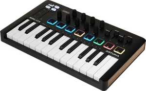
Arturia MiniLab MKII
Есть 16 энкодеров, 8 падов
Найти в продаже не удалось.
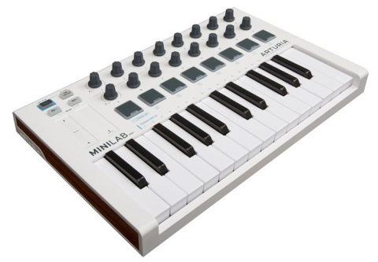
AKAI MPK MINI MK3
Есть 8 энкодеров, 8 падов, клавиши механические, собственных звуков нет, нужно смотреть PLAY-версии.
Стоит ~11 000 на ozon.
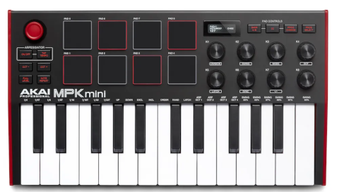
Есть 4 энкодера, 8 падов. Имеются собственные звуки.
Стоит 19 988 на яндекс маркет.
Стоит 14 698 на wildberries.
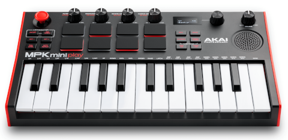
Novation Launchkey Mini MK3
Есть 8 энкодеров, 16 падов, клавиши механические, есть арпеджиатор
Стоит 15250 на yandex маркет.
Стоит 10 583 на kaz-express.ru плюс доставка
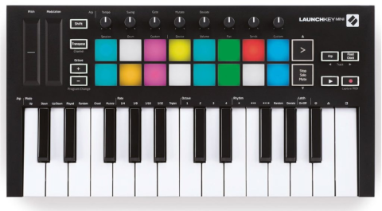
Worlde mini MIDI-контроллер, 25 клавиш, LAudio
Есть 16 энкодеров, 8 падов
Стоит 7600 на яндекс маркете.
Стоит 8000 на wildberries.
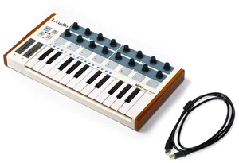
LAudio Panda mini C MIDI-клавиатура
Есть 4 энкодеров, 8 падов, 4 слайда
Стоит 7405 на яндекс маркете.
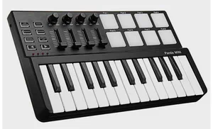
Worlde XTELL (Tuna mimi ?)
Есть 8 энкодеров, 8 движков, 8 падов
Стоит 8979 на wildberries.
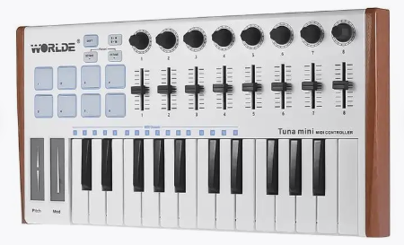
LAudio Panda-25C
Есть 8 энкодеров, 8 падов, помимо MIDI USB есть настоящии MIDI IO и MIDI OUT
Клавиши полноразмерные.
Стоит 12618 руб. на wieldberries,
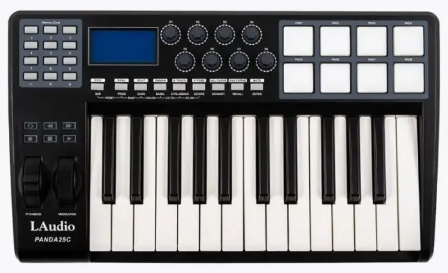
ROCKDALE Element
Есть 8 энколдеров, 9 падов, джойстик, экран
Есть переключатель банков A/B, разобраться только на пады или на энкодеры тоже.
Стоит 9527 на wieldberries.
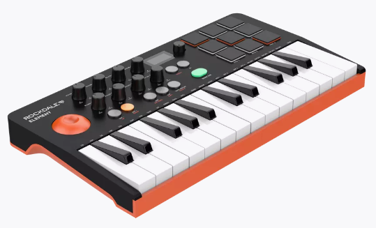
M-VAVE SMK-25
Есть 8 энкодеров, 8 падов, экран
Энкодеры бесконечные.
Похоже, что можно переключать на второй банк и энкодеры и пады - да, можно.
Даже есть Bluetooth, хотя в спецификации нет.
Стоит 6 584 на wildberries - в белом цвете
Стоит 6 912 на wildberries - в темном цвете.
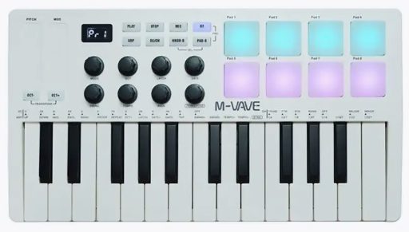
Arturia MicroFreak
MIDI-лаборатория с открытым исходным кодом
Клавиши не механические
Можно пощупать в шоурум United Music
Санкт-Петербург, ул. Лизы Чайкиной, 21 (надо предварительно звонить, возможно товар только в Москве)
Горьковская 11–15 мин.
Чкаловская 11–15 мин.
Петроградская 16–20 мин.
Стоит 36750 + доставка на avito.
Видеообзор - на youtube.
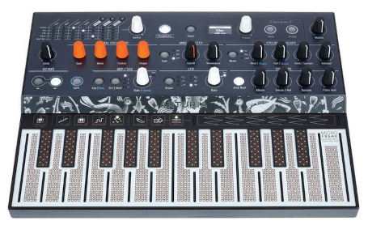
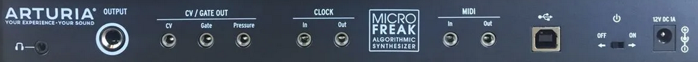
Без piano-клавиш
Korg nanoControl2
Есть 8 энкодеров, падов нет, есть кнопки.
Переключение банков в данной модели, по информации владельцев, происходит только при включении. Индикации выбранного банка нет.
Поддержка в Linux (правда, для первой версии контроллера) - есть скрипт на Python с GYU интерфейсом.
Стоит 7000 на ozon.
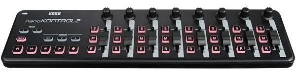
WORLDE EasyControl.9 MIDI
Есть 10 энкодеров, падов нет, есть кнопки
Стоит 4100 на ozon.
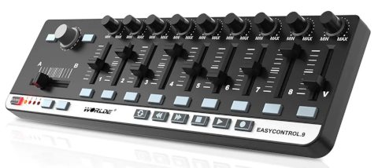
LAudio EasyControl MIDI-контроллер
Похоже, что это полный аналог или ребрендинг WORLDE EasyControl.9 MIDI
Разъем - Микро USB (тот который самый старый).
Стоит 4712 на yandex маркет.
Стоит 5981 на wildberries.
Стоит 5599 тоже на wildberries.
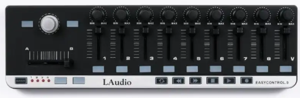
MIDI-контроллер AKAI LPD8 MKII
8 энкодеров, 8 падов
Стоит 8 990 на yandex маркете.
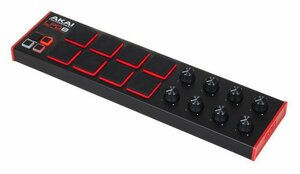
MIDI-контроллер iCON iControls Black
Есть 9 энкодеров, 8 падов, 9 движков, у каждого по 2 кнопки.
Стоит 10 023 на yandex маркете.
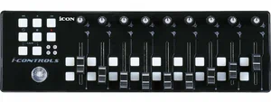
MIDI контроллер Behringer X-TOUCH MINI
Есть 8 энкодеров, 16 падов
Стоит 8 404 на yandex маркете.
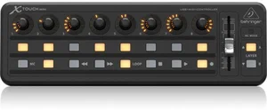
MIDI-контроллер Nakedboards MC-8 White
Просто 8 движков
Стоит 10 500 на yandex маркете.
Стоит 8 820 на avito.
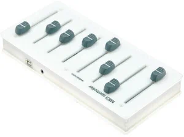